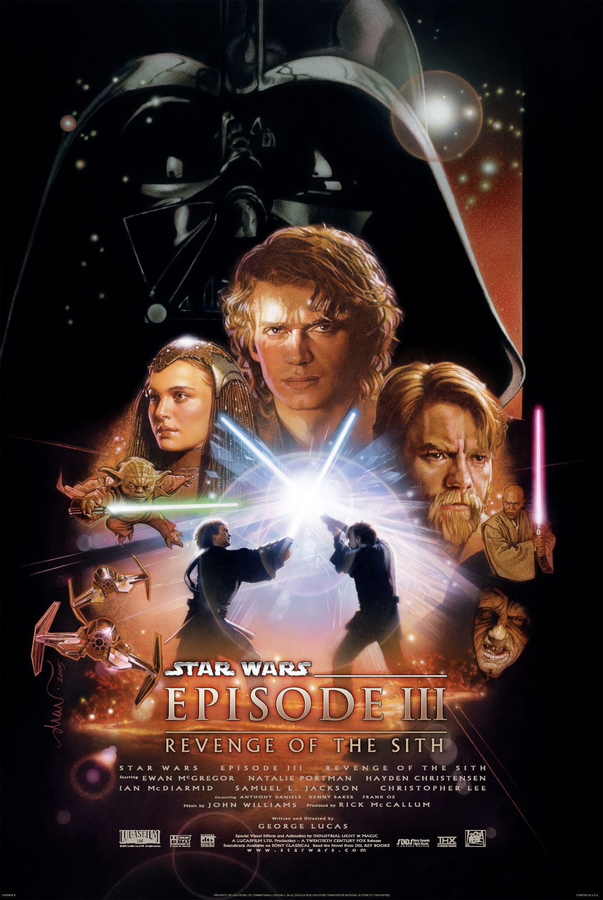

revenge of the Sith (2005)
Star Wars: Episode I - The Phantom Menace is a 1999 American epic space opera film written and directed by George Lucas, produced by Lucasfilm and distributed by 20th Century Fox. It is the first installment in the Star Wars prequel trilogy and stars Liam Neeson, Ewan McGregor, Natalie Portman, Jake Lloyd, Ian McDiarmid, Anthony Daniels, Kenny Baker, Pernilla August, and Frank Oz. The film is set 32 years before the original film, and follows Jedi Knight Qui-Gon Jinn and his apprentice Obi-Wan Kenobi as they protect Queen Amidala, in hopes of securing a peaceful end to a large-scale interplanetary trade dispute. Joined by Anakin Skywalker”a young slave with unusually strong natural powers of the Force - they simultaneously contend with the mysterious return of the Sith.
plot
“Darth Vader beginning”
The Trade Federation upsets order in the Galactic Republic by blockading the planet Naboo in preparation for a full-scale invasion. The Republic's leader, Supreme Chancellor Valorum, dispatches Jedi Master Qui-Gon Jinn and his apprentice, Obi-Wan Kenobi, to negotiate with Federation Viceroy Nute Gunray. Darth Sidious, a Sith Lord and the Trade Federation's secret adviser, orders the Viceroy to kill the Jedi and begin their invasion with an army of battle droids.
The Jedi escape and flee to Naboo. During the invasion, Qui-Gon saves a Gungan outcast, Jar Jar Binks, from being run over and killed by a droid transport. Indebted to Qui-Gon, Jar Jar leads the Jedi to an underwater Gungan city. The Jedi unsuccessfully try to persuade the Gungan leader, Boss Nass, into helping the people of Naboo, though they are able to obtain transportation to Theed, the capital city on the surface. They rescue Queen Padme Amidala, the ruler of the Naboo people, and escape the planet on her royal starship en route to the Republic capital planet of Coruscant.
Amidala's ship is damaged as they pass the Federation blockade and becomes unable to use its hyperdrive, landing for repairs on the desert planet Tatooine. Qui-Gon, Jar Jar, astromech droid R2-D2, and Padme - disguised as one of her handmaidens - visit the settlement of Mos Espa to purchase new parts at a junk shop. They meet the shop's owner, Watto, and his nine-year-old slave, Anakin Skywalker, who is a gifted pilot and engineer, and has created a protocol droid called C-3PO. Qui-Gon senses a strong presence of the Force within Anakin, and is convinced that he is the "chosen one" of the Jedi prophecy who will bring balance to the Force. Qui-Gon wagers Anakin's freedom with Watto in a Podrace, which Anakin wins. Anakin joins the group to be trained as a Jedi, leaving behind his mother, Shmi. En route to their starship, Qui-Gon encounters Darth Maul, Darth Sidious' apprentice, who was sent to capture Amidala. A duel ensues, but Qui-Gon quickly disengages and escapes on board the starship.
Qui-Gon and Obi-Wan escort Amidala to Coruscant so that she can plead her people's case to Chancellor Valorum and the Galactic Senate. Qui-Gon asks the Jedi Council for permission to train Anakin as a Jedi, but the Council refuses, concerned that Anakin is vulnerable to the dark side. Undaunted, Qui-Gon vows to train Anakin himself.
“Troopers kill the remaining Jedi”
Meanwhile, Naboo's Senator Palpatine persuades Amidala to make a vote of no confidence in Valorum to elect a more capable chancellor to resolve the crisis on Naboo. Though she is successful in pushing for the vote, Amidala grows frustrated with the corruption in the Senate and decides to return to Naboo. Qui-Gon and Obi-Wan are ordered by the Jedi Council to accompany the queen to Naboo, as well as to confirm the return of the Sith, whom they believe to be extinct.
On Naboo, Padme reveals herself to the Gungans as Queen Amidala, and persuades them into an alliance against the Trade Federation. Jar Jar leads his people in a battle against the droid army while Padme leads the hunt for Viceroy Gunray in Theed. During a battle in a starship hangar to free Naboo pilots, Anakin takes shelter in a vacant starfighter, and inadvertently triggers its autopilot, joining the battle against the Federation droid control ship in space. Anakin blunders into the hangar of the droid control ship and destroys the ship from within before escaping, deactivating the droid army. Meanwhile, Qui-Gon and Obi-Wan battle Darth Maul, who mortally wounds Qui-Gon, but is eventually bisected by Obi-Wan. As he dies, Qui-Gon requests Obi-Wan to train Anakin. Subsequently, Palpatine is elected as the new Supreme Chancellor, and Gunray is arrested. Yoda promotes Obi-Wan to the rank of Jedi Knight and reluctantly accepts Anakin as Obi-Wan's apprentice. Padme presents a gift of appreciation and friendship to the Gungans at a festive ceremony.